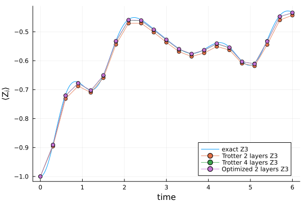
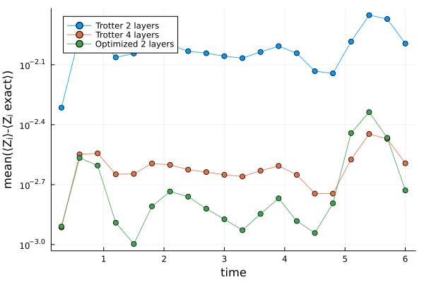

Circuit compression
Simulating the dynamics of quantum systems is a prime candidate for quantum advantage, yet accurate Trotterizations are typically very deep, making them out of reach in the NISQ era and very expensive to run even for fully fault-tolerant devices.
On the other hand, variational circuits are a promising alternative: by performing some optimization, it's possible to approximate to high accuracy a deep (and accurate) Trotterization with a much shallower variational circuit. This is an example notebook for the compression algorithm introduced in [1]. In general, this task of unitary compression involves the Hilbert-Schmidt cost between a target unitary $U$ and a parametrized ansatz $V(\vec\theta)$
\[C_\mathrm{HST}(U, V(\vec\theta)) = 1 - \frac{|\mathrm{Tr(U^\dagger V(\vec\theta))}|^2}{4^n},\]
which is $0$ iff. $U=V(\vec\theta)$ and $>0$ otherwise.
Concretely, the goal of this notebook is to compress the dynamics $U$ of $L_U$ layers of a Heisenberg-like Hamiltonian into an ansatz $V(\vec\theta)$ with $L_V$ layers ($L_V < L_U$) by minimizing a local cost function
\[ R_{\mathcal{Q}_{LS}}^{\mathrm{loc}}(\vec \theta)= \frac{1}{2} - \frac{1}{6n} \sum_{j=1}^{n_q}\sum_{P = X, Y, Z} \langle\langle P_j \vert \boldsymbol{V(\vec\theta)U^\dagger}\vert P_j\rangle \rangle, \]
using Pauli propagation. The local cost function provides an upper bound on the HST cost
\[C_\mathrm{HST}(U, V(\vec\theta)) \leq 2n R_{\mathcal{Q}_{LS}}^{\mathrm{loc}}(\vec \theta)\]
Once the compression is performed, we show using a statevector simulator (since we are implementing this for a small system) that applying the compressed ansatz $V(\vec\theta^\star)$ multiple times yields accurate dynamics, surpassing the accuracy of Trotterizations at both the same and larger depths.
using PauliPropagation
using ForwardDiff
using Base.Threads
using OptimSetup
Create the 1D topology on nq qubits
nq = 10
topology = bricklayertopology(nq)Specify the number of layers in the target $L_U$, of the ansatz $L_V$ and set the total evolution time that we want to compress.
LU = 8
LV = 2
t = 0.3Implement a single layer of a second order trotterization for the Heisenberg model Hamiltonian
\[ e^{-i \Delta t H} \approx e^{-i \Delta t H_{YY}/2} e^{-i \Delta t H_{XX}/2} e^{-i \Delta t H_{ZZ}} e^{-i \Delta t H_{YY}/2} e^{-i \Delta t H_{XX}/2}\]
Note that PauliRotation(theta) gates implement rotations exp(theta/2 P), so we need to multiply all our angles by a factor two.
function second_order_trotter(topology, n_layers, Jx, Jy, Jz, dt)
circ = PauliRotation[]
thetas = Float64[]
for k = 1:n_layers
if k == 1
rxxlayer!(circ, topology)
append!(thetas, ones(length(topology)) .* (dt * Jx))
ryylayer!(circ, topology)
append!(thetas, ones(length(topology)) .* (dt * Jy))
end
rzzlayer!(circ, topology)
append!(thetas, ones(length(topology)) .* (2 * dt * Jz))
if k < n_layers
rxxlayer!(circ, topology)
append!(thetas, ones(length(topology)) .* (2 * dt * Jx))
ryylayer!(circ, topology)
append!(thetas, ones(length(topology)) .* (2 * dt * Jy))
else
rxxlayer!(circ, topology)
append!(thetas, ones(length(topology)) .* (dt * Jx))
ryylayer!(circ, topology)
append!(thetas, ones(length(topology)) .* (dt * Jy))
end
end
return circ, thetas
endsecond_order_trotter (generic function with 1 method)Build the target and ansatz circuits
Jz = 1.
Jx = 0.5
Jy = 0.1
dt_U = t / LU
dt_V = t /LV
target_circuit, target_parameters = second_order_trotter(topology, LU, Jx, Jy, Jz, dt_U)
ansatz_circuit, ansatz_parameters_trotter = second_order_trotter(topology, LV, Jx, Jy, Jz, dt_V)
# needed later for the statevector simulator
comparison_deeper, thetas_deeper = second_order_trotter(topology, 2 * LV, Jx, Jy, Jz, dt_V / 2)Specify PP truncations.
min_abs_coeff_target = 1.e-8
min_abs_coeff_ansatz = 1.e-9
W = 8Create a list single_site_strings containing all $3n_q$ Pauli strings that we need to compute the cost function
single_site_strings = [(PauliString(nq, :X, ii) for ii in 1:nq)..., (PauliString(nq, :Y, ii) for ii in 1:nq)..., (PauliString(nq, :Z, ii) for ii in 1:nq)...]Precompute targets
Compute $\bm{U^\dagger}\vert P_j\rangle\rangle = U^\dagger P_j U$ for all strings in single_site_strings
evolved_target_strings = Vector{PauliSum}(undef, length(single_site_strings))
@threads for i in eachindex(single_site_strings)
s = single_site_strings[i]
evolved_target_strings[i] = propagate(target_circuit, s, target_parameters; min_abs_coeff=min_abs_coeff_target, max_weight = W)
endBuild local cost function
Compute $\langle \langle P_j\vert \boldsymbol{V(\vec\theta)}$ and then evaluate the inner product $\langle \langle P_j\vert \boldsymbol{V(\vec\theta)} \cdot \boldsymbol{U^\dagger}\vert P_j\rangle\rangle$. Since we are interested in optimizing over $\vec\theta$, we need to extract the gradient as well. To this end we emply the ForwardDiff AD library.
function wrap_pauli_string(pstr, CT)
return PauliString(pstr.nqubits, pstr.term, CT(1))
end
function Cloc(ansatz_params::Vector{CT}, ansatz_circ, single_site_strings, evolved_target_strings, min_abs_coeff, max_weight) where {CT}
contribs = Vector{CT}(undef, length(single_site_strings))
@threads for i in eachindex(single_site_strings)
evolved = propagate(ansatz_circ, wrap_pauli_string(single_site_strings[i], CT),
ansatz_params; min_abs_coeff, max_weight)
contribs[i] = scalarproduct(evolved_target_strings[i], evolved)
end
return 0.5 - sum(contribs) / (6 * nq)
end
lossfunction = θ -> Cloc(θ, ansatz_circuit, single_site_strings, evolved_target_strings, min_abs_coeff_ansatz, W)
g! = (g, θ) -> ForwardDiff.gradient!(g, lossfunction, θ)Perform the optimization starting from the initial guess ansatz_parameters_trotter corresponding to the Trotter angles for $L_V$ layers.
gradtol = 1.e-5
maxiter = 20
optimizer = Optim.LBFGS()
res = Optim.optimize(lossfunction, g!, ansatz_parameters_trotter, optimizer,
Optim.Options(show_trace=true, show_every=2, store_trace=true,
g_tol=gradtol, iterations=maxiter))
thetas_optimized = res.minimizerIter Function value Gradient norm
0 1.603985e-05 2.843205e-04
* time: 0.03777289390563965
2 1.165579e-05 5.394587e-05
* time: 30.075740098953247
4 8.504315e-06 2.046829e-04
* time: 58.36175608634949
6 5.170889e-06 4.151421e-05
* time: 81.21105790138245
8 5.032348e-06 6.685522e-06
* time: 97.97074794769287Statevector simulator
We use the Yao library to simulate the dynamics of an initial state $\ket{\psi_0}$ under the differernt circuits. Note that the following results showing that the expectation value is much more accurate with the compressed ansatz can be strongly problem dependent, and must be taken as illustrative examples only.
using Yao
using LinearAlgebra
function heisenberg_1d(n, topology; J=1.0)
terms = map(1:length(topology)) do k
(i, j) = topology[k]
Jx * (kron(n, i=>X, j=>X)) +
Jy * (kron(n, i=>Y, j=>Y)) +
Jz * (kron(n, i=>Z, j=>Z))
end
sum(terms)
endheisenberg_1d (generic function with 1 method)Create Hamiltonian as matrix, take matrix exponential
H = heisenberg_1d(nq, topology; J=1.0)
# 10 qubits
reg = product_state(bit"0101010101")
exact_finer_by = 10
psi = statevec(reg)
Hmat = Matrix(mat(H))
U_exact = exp(-im * (t/exact_finer_by) * Hmat)Specify timesteps, and compute exact magnetization at those instants
n_reps = 20
magnetizations = zeros(nq, (n_reps*exact_finer_by)+1)
for j =1:nq
Zstring = put(nq, j=>Z)
magnetizations[j, 1] = real(expect(Zstring, arrayreg(psi)))
end
for k=1:(exact_finer_by * n_reps)
psi = U_exact * psi
reg_t = arrayreg(psi)
for j =1:nq
Zstring = put(nq, j=>Z)
magnetizations[j, k+1] = real(expect(Zstring, reg_t))
end
end# helpers for make PauliRotations into Yao
function elem_to_yao!(circuit, gate, theta)
if gate.symbols == [:X, :X]
push!(circuit, cnot(gate.qinds[2], gate.qinds[1]))
push!(circuit, Yao.put(gate.qinds[2] => Yao.Rx(theta)))
push!(circuit, cnot(gate.qinds[2], gate.qinds[1]))
elseif gate.symbols == [:Y, :Y]
push!(circuit, Yao.put(gate.qinds[1] => Yao.Rz(-pi / 2)))
push!(circuit, Yao.put(gate.qinds[2] => Yao.Rz(-pi / 2)))
push!(circuit, cnot(gate.qinds[2], gate.qinds[1]))
push!(circuit, Yao.put(gate.qinds[2] => Yao.Rx(theta)))
push!(circuit, cnot(gate.qinds[2], gate.qinds[1]))
push!(circuit, Yao.put(gate.qinds[1] => Yao.Rz(pi / 2)))
push!(circuit, Yao.put(gate.qinds[2] => Yao.Rz(pi / 2)))
elseif gate.symbols == [:Z, :Z]
push!(circuit, cnot(gate.qinds[1], gate.qinds[2]))
push!(circuit, Yao.put(gate.qinds[2] => Yao.Rz(theta)))
push!(circuit, cnot(gate.qinds[1], gate.qinds[2]))
end
end
function make_yao_circ(pp_circ, pp_thetas, nq)
yao_circ = chain(nq)
for (gate, theta) in zip(pp_circ, pp_thetas)
elem_to_yao!(yao_circ, gate, theta)
end
return yao_circ
endmake_yao_circ (generic function with 1 method)Create Yao circuits
ansatz_trotter = make_yao_circ(ansatz_circuit, ansatz_parameters_trotter, nq)
ansatz_optimized = make_yao_circ(ansatz_circuit, thetas_optimized, nq)
deeper_trotter = make_yao_circ(comparison_deeper, thetas_deeper, nq)Run statevector simulations for different trotterizations
state_prep = chain(nq)
for i=1:2:nq
push!(state_prep, put(nq, i=>X))
end
psi_AT = Yao.apply!(Yao.zero_state(nq), state_prep)
psi_opt = Yao.apply!(Yao.zero_state(nq), state_prep)
psi_deeper = Yao.apply!(Yao.zero_state(nq), state_prep)
magnetizations_AT = zeros(nq, n_reps+1)
magnetizations_opt = zeros(nq, n_reps+1)
magnetizations_deeper = zeros(nq, n_reps+1)
for j =1:nq
Zstring = put(nq, j=>Z)
magnetizations_AT[j, 1] = real(expect(Zstring, psi_AT))
magnetizations_opt[j, 1] = real(expect(Zstring, psi_opt))
magnetizations_deeper[j, 1] = real(expect(Zstring, psi_deeper))
end
for k=1:n_reps
psi_AT = Yao.apply!(psi_AT, ansatz_trotter)
psi_opt = Yao.apply!(psi_opt, ansatz_optimized)
psi_deeper = Yao.apply!(psi_deeper, deeper_trotter)
for j =1:nq
Zstring = put(nq, j=>Z)
magnetizations_AT[j, k+1] = real(expect(Zstring, psi_AT))
magnetizations_opt[j, k+1] = real(expect(Zstring, psi_opt))
magnetizations_deeper[j, k+1] = real(expect(Zstring, psi_deeper))
end
endPlot example magnetization at site 3 and plot mean error over all magnetizations at different times
using Plots
using Statistics
p = Plots.plot(xlabel="time", ylabel="⟨Zⱼ⟩", leg=:bottomright)
p_err = Plots.plot(xlabel="time", ylabel="mean(⟨Zⱼ⟩-⟨Zⱼ exact⟩)", yscale=:log10)
timestamps = collect(range(0., n_reps * t, length=n_reps+1))
timestamps_exact = collect(range(0., n_reps * t, length=((n_reps * exact_finer_by)+1)))
for j in [3]
Plots.plot!(p, timestamps_exact, magnetizations[j, :], label = "exact Z$j")
Plots.plot!(p, timestamps, magnetizations_AT[j, :], label = "Trotter $(LV) layers Z$j", markershape=:circle, linestyle=:dot)
Plots.plot!(p, timestamps, magnetizations_deeper[j, :], label = "Trotter $(2*LV) layers Z$j", markershape=:circle, linestyle=:dot)
Plots.plot!(p, timestamps, magnetizations_opt[j, :], label = "Optimized $(LV) layers Z$j", markershape=:circle, linestyle=:dot)
println("$j, mean AT = $(mean(abs.(magnetizations[j, (1+exact_finer_by):exact_finer_by:end] .- magnetizations_AT[j, 2:end]))), mean deeper = $(mean(abs.(magnetizations[j, (1+exact_finer_by):exact_finer_by:end] .- magnetizations_deeper[j, 2:end]))), mean OPT = $(mean(abs.(magnetizations[j, (1+exact_finer_by):exact_finer_by:end] .- magnetizations_opt[j, 2:end])))")
end
Plots.plot!(p_err, timestamps[2:end], transpose(mean(abs.(magnetizations[:, (1+exact_finer_by):exact_finer_by:end] .- magnetizations_AT[:, 2:end]), dims=1)), label = "Trotter $(LV) layers", markershape=:circle, linestyle=:dot)
Plots.plot!(p_err, timestamps[2:end], transpose(mean(abs.(magnetizations[:, (1+exact_finer_by):exact_finer_by:end] .- magnetizations_deeper[:, 2:end]), dims=1)), label = "Trotter $(2*LV) layers", markershape=:circle, linestyle=:dot)
Plots.plot!(p_err, timestamps[2:end], transpose(mean(abs.(magnetizations[:, (1+exact_finer_by):exact_finer_by:end] .- magnetizations_opt[:, 2:end]), dims=1)), label = "Optimized $(LV) layers", markershape=:circle, linestyle=:dot)
display(p)
display(p_err)3, mean AT = 0.011479990614442829, mean deeper = 0.002928244974359276, mean OPT = 0.0022456849070427746
